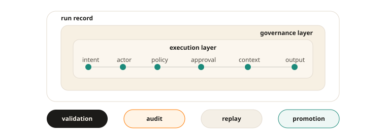

What Anthesis is
As agents become part of planning, coding, documentation, validation, release, and operational workflows, teams face a new operational problem: loops can continue faster than they can be meaningfully reviewed, approved, or reconstructed. That creates risk around authority, trust, compliance, and accountability.
Anthesis addresses that problem by treating agent activity as a governed state transition rather than informal automation. Instead of asking teams to trust opaque model behavior, it forces consequential intervention through deterministic gates tied to policy, approvals, evidence, and replay-aware records.
The problem
- Agentic loops that continue without explicit authority or meaningful attribution
- Unclear authority over who or what approved a consequential step
- Difficulty reconstructing how an outcome was produced
- Poor auditability in regulated or security-sensitive environments
- Drift between policy, intent, gate decisions, execution, and repository state
What Anthesis changes
From
“the agent made a change”
To
“the system passed a deterministic gate and executed a bounded action under policy, with recorded authority, linked approvals, evidence, and a replay-aware record.”
Evidence envelope
Each run becomes a durable record, not an invisible side effect.

Core capabilities
Deterministic gate evaluation
Actions operate within explicit rules, scopes, risk classifications, and approval requirements.
Reviewable state transitions
Consequential outputs can be shaped into forms that humans can inspect, approve, deny, or safely halt.
Replay-aware evidence
Executions can be reconstructed well enough to understand the gate decision, context, and material outcome.
Auditable records
Approvals, actors, gate decisions, evidence, and outcomes are retained as governance artifacts.
Human authority with bounded agentic execution
Humans remain governance anchors for promotion, exceptions, and high-consequence decisions, while agents participate as bounded operators.
Where it applies
- Code generation and repository modification loops
- Documentation and specification workflows
- CI/CD and operational execution loops
- Validation, policy checks, and approval routing
- Audit, replay, and post-hoc reconstruction of meaningful interventions
Integration modes
Anthesis integration strength depends on whether an agent can perform externally observable effects without crossing Anthesis. Prompts and conventions are not guarantees. Guarantees come from runtime control surfaces: registry restriction, network isolation, capability validation, gateway enforcement, credential isolation, and sandboxing.
- Tool wrapper / invoke: expose only
anthesis.invokeor Anthesis-scoped wrappers. - MCP mediation: expose Anthesis as the agent-facing MCP surface.
- Gateway / sidecar: block downstream network or API access except through Anthesis.
- Capability tokens: require downstream tools to reject calls without Anthesis-issued grants.
- SDK wrapper: pair developer ergonomics with credential isolation or guardrails.
- Sandboxed runtime: block direct filesystem, network, process, and credential effects except through governed paths.
Architectural posture
Anthesis is Git-native, governance-first, and gate-oriented.
Git remains the source of truth for promotable artifacts and change history. Anthesis adds deterministic control surfaces around how work is proposed, evaluated, approved, executed, and promoted. The implementation may contain multiple layers for policy, orchestration, and execution, but the primary external point is simpler: agentic participation should occur through explicit, bounded, reviewable mechanisms rather than opaque autonomy.
Current posture
Anthesis is presented here as a governance architecture and implementation direction for AI-assisted software delivery. The public materials describe the intended control model, vocabulary, and operating constraints rather than claiming a finished compliance product.
The near-term focus is a narrow, inspectable path for deterministic gate evaluation, policy-bound execution, approval routing, evidence capture, and replay-aware records. Broader integrations should be added only where they preserve those control surfaces.
Non-goals
- Replacing human accountability with model autonomy
- Treating generated output as trusted without validation
- Bypassing existing review, promotion, or incident processes
- Hiding approvals, gate decisions, evidence, or execution context inside informal logs
Why this matters
Safer automation
Anthesis does not require disabling agents. It gates their loops and narrows their blast radius.
Better review
Review can include not just the resulting diff, but also intent, policy, authority, gate decisions, and supporting evidence.
Stronger incident analysis
Replay-aware records make it easier to understand how a material outcome was reached.
More defensible AI adoption
Organizations can adopt AI assistance without discarding core governance expectations.
Better fit for regulated and security-sensitive work
Anthesis treats auditability and accountability as design constraints, not optional add-ons.
Ecosystem relevance
Anthesis is not only a product thesis. It is also an exploration of governance patterns for AI-era software delivery.
- Deterministic gates for policy-governed intervention
- Human and agent actors with distinct authority models
- Evidence and replay requirements for consequential AI use
- Hardened control surfaces for agentic architectures and lifecycle loops
- Reviewable and auditable automation
In one sentence
Anthesis acts as a deterministic gate for agentic architectures and loops, so teams can use policy-bound, reviewable, replayable, and auditable execution without losing control.